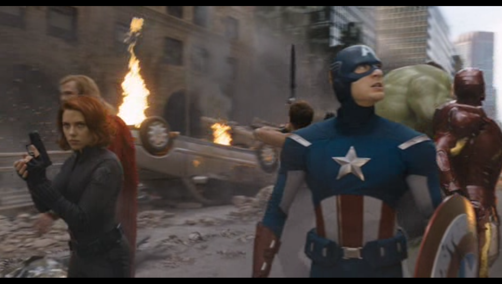

Présentation des duel contre l'antagoniste et analyse de leurs scènes
Dans cette page je souhaite mettre en avant les différents duels de chaque héros contre l'antagoniste, Loki, ceci afin de mettre en avant la réalisation de Joss Whedon, ainsi que le lien qu'il a créé à travers tout le film.
Captain America en opposition à Loki
Scène commençant à 0:39:37 et se termine à 0:41:05. Il s'agit d'une scène se passant à Berlin avec Captain America, cette scène est une opposition de l'Amérique face à l'Allemagne dominée par un être inhumain (référence à la représentation d'Hitler par les Américain lors de la Seconde Guerre Mondiale, il était représenté comme un monstre donc il était déshumanisé). Le choix d'avoir utilisé le personnage de Captain America est ici pour le faire s'opposer à l'Hitler moderne (dans un comics Captain America frappé Hitler cependant dans le film, Captain America : First Avenger, ce dernier ne rencontre jamais Hitler).
Black Widow en opposition à Loki
Scène commençant à 1:00:56, soit à la moitié, donc à l'apogée du film, et se termine à 1:04:28. Il s'agit d'un duel psychologique entre Black Widow et Loki. Chacun tente de manipuler l'autre, Loki tente de détruire psychologiquement Black Widow, qui quant à elle tente de faire avouer à Loki son plan. Un duel psychologique se met donc en place dans lequel Loki semble prendre l'ascendant, ce sommet étant atteint au moment où Loki ayant le visage totalement déformé par la vitre verte de sa cage à 1:03:17. Suite à cela Black Widow simule une défaite menant Loki à croire à une victoire le menant à baisser sa garde et dévoiler son plan. Son plan était annoncé à l'avance par la couleur de sa prison, verte comme la couleur du personnage d'Hulk et lors de sa défiguration dans la vitre menant à un élargissement de son corps rappelant ainsi le personnage d'Hulk.
Iron Man en opposition à Loki
Scène commençant à 1:35:14 et se termine à 1:38:08. Il s'agit d'un duel de domination et de menace, chacun dévoilant le nom de son équipe (montrant ainsi qu'ils en sont chacun le leader). Iron Man indique que Loki a contrarié chacun des héros (annonçant ainsi le duel de chaque face à Loki). Ceci étant accentué par la proclamation d'Iron Man "Il n'y a aucune version de l'histoire où vous remportez le trophée", indiquant que quel que soit le héros face à Loki, ce dernier perdra. Le duel était perdu pour Loki au moment où il tente d'user de son sceptre pour dominer Iron Man, cependant ce dernier est protégé par son moteur/coeur, métaphore de la pureté du coeur du héros face à l'impureté ennemie.
Thor en opposition à Loki
Scène commençant à 1:39:39 à et se termine à 1:43:11. Il s'agit du seul duel coupé par d'autres scènes signifiant alors une séparation (la séparation idéologique des frères). De plus au milieu de ce duel il y a trois héros retournant à terre, rappelant ainsi que le duel qui à un lieu est un duel de Dieu.
Hawkeye en opposition à Loki
Scène commençant à 1:54:47 à et se termine à 1:55:05. Il s'agit d'un duel de ruse entre Hawkeye et Loki. Hawkeye arrivant à faire croire à Loki que la flèche utilisée était destinée pour son crâne, cependant le héros avait prévu que l'antagoniste attrape la flèche au vol. l'ayant auparavant transformé en flèche explosive. De plus il s'agit du duel le plus court, mettant ainsi en avant qu'une ruse ne peut être efficace que si elle est exécutée rapidement.
Hulk en oppostion à Loki
Scène commençant à 1:55:11 à et se termine à 1:55:43. Le duel de force entre Loki est Hulk, est en réalité un duel de Bruce Banner contre Loki, et est donc un duel de la science contre Dieu. Hulk sortant vainqueur de ce duel menant à signifier que la science a détrôné Dieu. Le commentaire d'Hulk à la fin de la scène signifie que la science a totalement remis en question l'existence même de Dieu.
Informations supplémentiare sur le film

Le film étant intégralement tourné en 16/9 contrairement aux films de son époque tournée en CinémaScope, ce choix de Josh Whedon est expliqué à 1:47:45, ce dernier voulant mettre tous les héros dans un même plan visible et proche afin de créer une cohésion entre eux. Sans ce cadrage spécifique ils auraient dû être éloignés pour être dans le même plan et visible, menant ainsi à une cohésion moins puissante.
Cette représentation de cohésion est aussi présente lors d'un plan-séquence
commençant à 1:51:54 et se terminant à 1:52:32, montrant ainsi le fait que l'équine fait qu'une (un plan pour les combiner tous)